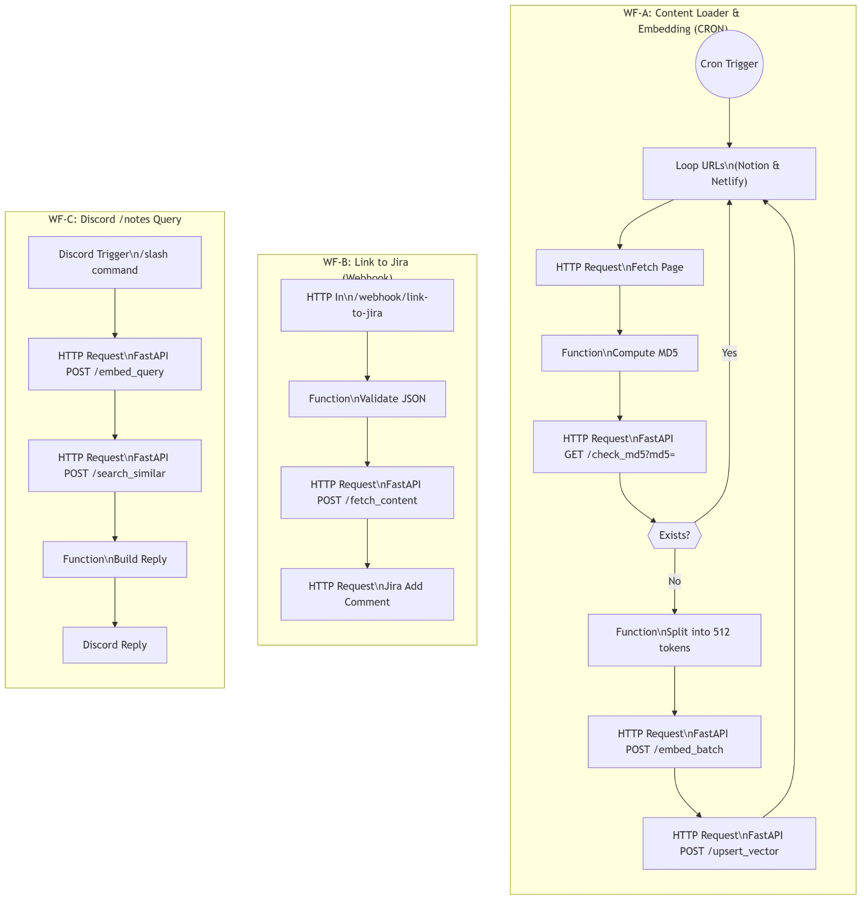
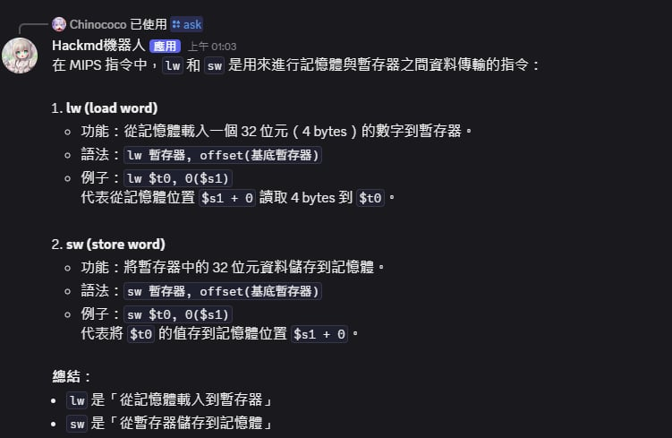
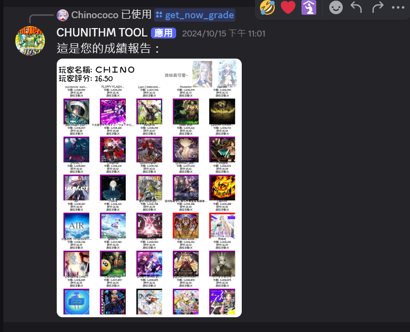
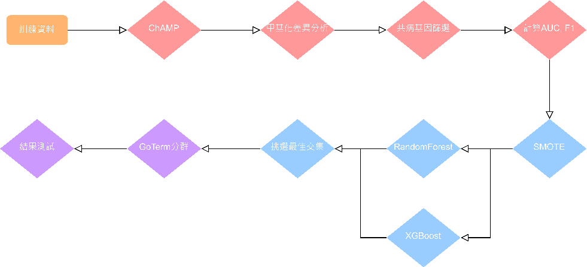
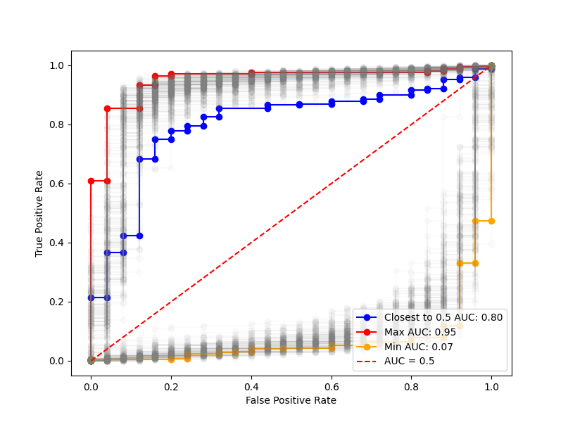
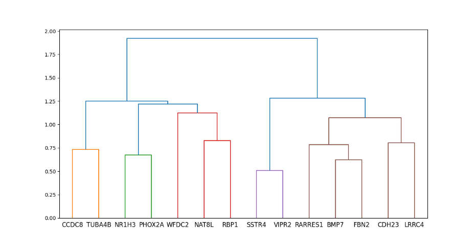
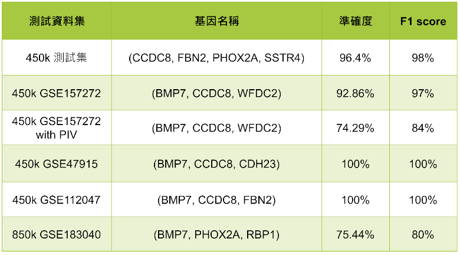

ScrumPlaner
整合AI服務的知識管理系統，實現智能檢索與自動化工作流程。本專案旨在提供一個全方位的知識管理解決方案，結合多種先進技術，實現高效的資訊整理與檢索功能。


主要功能
筆記同步
支援 Notion、HackMD 和 CouchDB 的即時同步功能
AI 整合
整合 Anything LLM，提供智能檢索與回答功能
自動化工作流
使用 n8n 建立自定義的自動化工作流程
雲端部署
AWS EC2 自動部署與 GitHub Action CI/CD 整合
使用技術
ChunithmDiscordBot
音樂遊戲數據分析與社群互動機器人系統，為玩家提供個人化的遊戲數據分析與進步建議。透過Discord平台，玩家可以方便地查詢自己的遊戲數據，並獲得客製化的建議。

主要功能
玩家評分分析
詳細的遊戲表現數據分析與視覺化
弱點雷達圖
生成個人化的技能雷達圖，識別需要改進的領域
歷史記錄追蹤
追蹤並分析玩家的進步歷程
智能推薦
基於玩家能力提供個人化的歌曲推薦
使用技術
Methylation of Prostate Cancer Predict
針對前列腺癌檢測的痛點，本研究結合 DNA 甲基化數據與機器學習技術，開發高效且低成本的早期預測方法。透過多組外部數據驗證，證實僅需少量基因即可實現高準確度預測，具備實際臨床應用潛力。




研究重點
數據處理與分析
使用 ChAMP 套件進行甲基化數據前處理，包含背景修正、標準化等
機器學習模型
整合 Random Forest 與 XGBoost，結合 SMOTE 處理數據不平衡
預測效能
使用 3 個基因即可達到 90% 以上的 F1 分數
臨床應用潛力
提供低成本、高效率的早期檢測方案